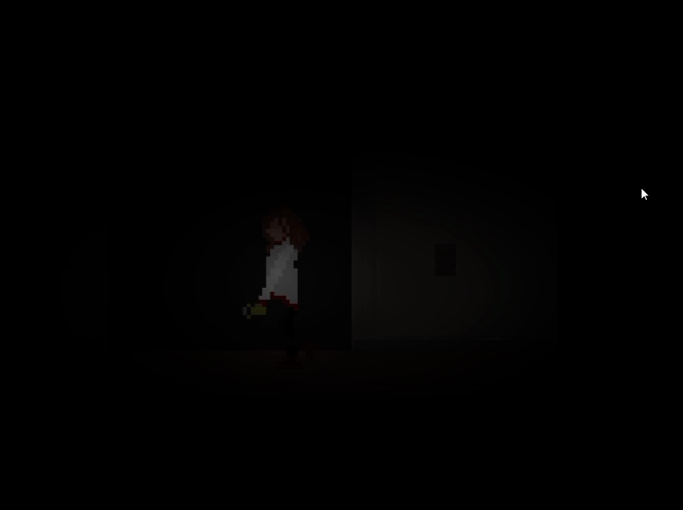
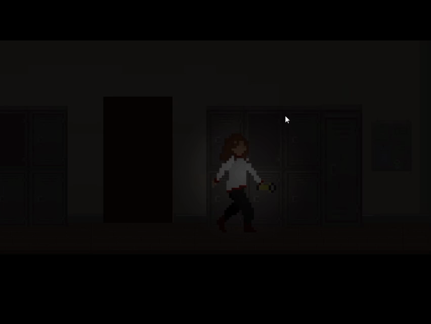
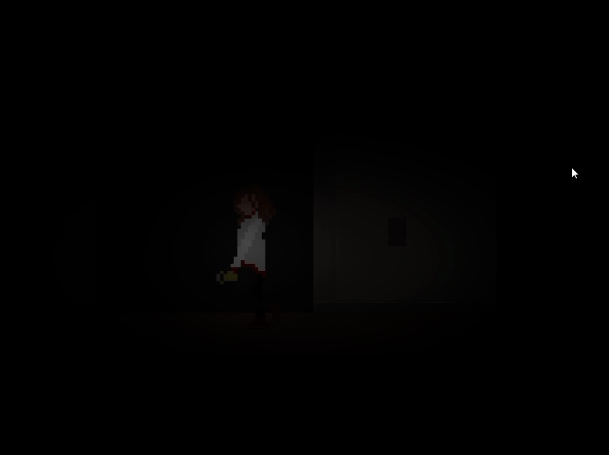
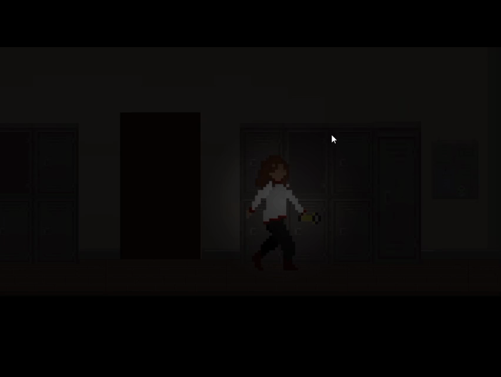
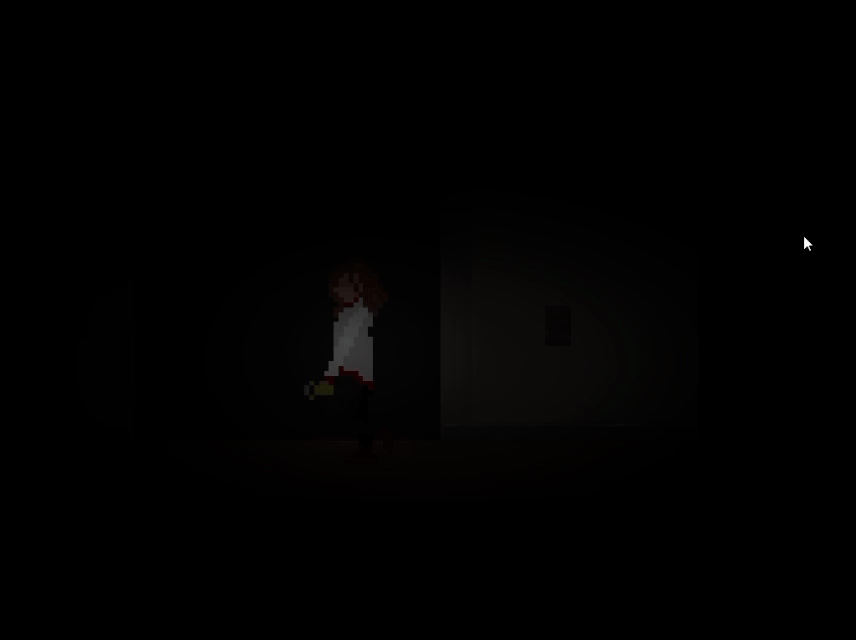
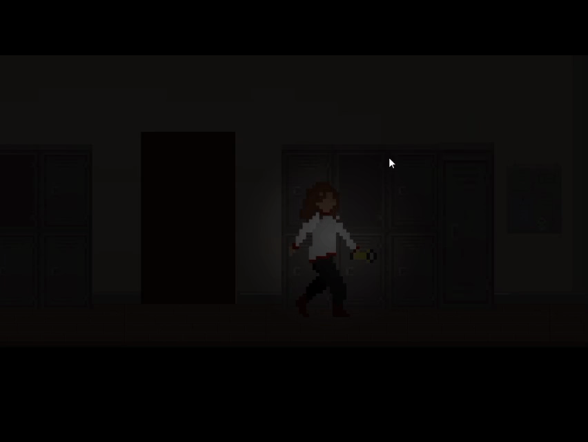

Galeria
 



Uma jornada de aventura e mistério como você nunca viu!
Em uma noite que parecia comum, um grupo de estudantes se vê preso dentro da escola após o anoitecer. O que começa como uma simples curiosidade logo se transforma em um pesadelo real: criaturas sobrenaturais emergem das sombras, perseguindo cada passo, cada sussurro, cada batida do coração. Sem comunicação com o mundo exterior e cercados por forças que desafiam a lógica, eles precisam trabalhar juntos, superar seus medos e encontrar uma saída antes que seja tarde demais.
LostMirror é um jogo de horror e aventura em PixelArt que mergulha o jogador em ambientes sombrios, puzzles desafiadores e decisões que podem significar a vida ou a morte. Explore corredores abandonados, descubra segredos esquecidos e enfrente horrores além da compreensão humana. Você terá coragem suficiente para encarar o espelho e enfrentar o que está do outro lado?

